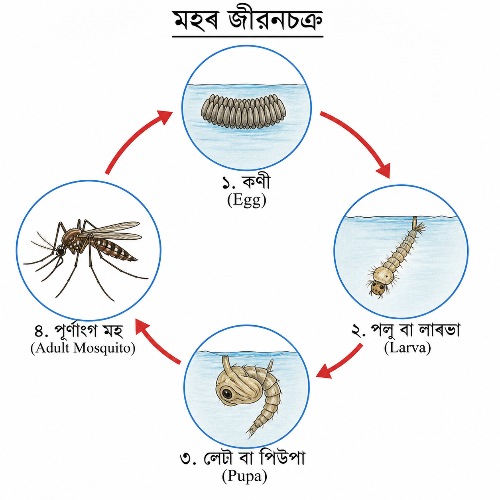

1. তলত দিয়া কোনবিধৰ বৃদ্ধি নহয়?
(a) গছ
(b) চাইকেল
(c) শিশু
(d) পখিলা
উত্তৰ:(b) চাইকেল ।
✦ ✦ ✦
2. বীজৰ অংকুৰণত তলত দিয়া কোনবিধৰ প্ৰয়োজন?
(a) পোহৰ
(b) প্রয়োজনীয় উষ্ণতা
(c) সাৰ
(d) পানী
উত্তৰ:(d) পানী ।
✦ ✦ ✦
3. মাছে কিহৰ সহায়ত পানীত সাঁতুৰি ফুৰে?
(a) ফান
(b) ডেউকা
(c) নেজ
(d) ঠেং
উত্তৰ:(a) ফান ।
✦ ✦ ✦
4. তলৰ কোনবিধ প্রাণী মাটি আৰু পানী উভয়তে থাকিব পাৰে?
(a) মাছ
(b) ভেকুলী
(c) শিয়াল
(d) তিমি মাছ
উত্তৰ:(b) ভেকুলী ।
✦ ✦ ✦
5. তলত দিয়া কোনবিধ গছৰ পাত স্পৰ্শ কৰিলে জাপ খাই যায়?
(a)আমলখি
(b) সূর্যমুখী ফুল
(c) লাজুকী লতা
(d) কলচী উদ্ভিদ
উত্তৰ:(c) লাজুকী লতা ।
✦ ✦ ✦
6. মহে ক'ত কণী পাৰে?
(a) বন্ধ পানীত
(b) পাতৰ তলত
(c) মাটিত
(d) নদীত
উত্তৰ:(a) বন্ধ পানীত ।
✦ ✦ ✦
7. লালুকীৰ গাত তলৰ কোনটো দেখা যায়?
(a) ঠেং আৰু জলক্লোম
(b) নেজ আৰু জলক্লোম
(c) হাঁওফাঁও আৰু নেজ
(d) কেবল জলক্রোম
উত্তৰ:(b) নেজ আৰু জলক্লোম
✦ ✦ ✦
| স্তম্ভ-A |
স্তম্ভ-B |
| (a) ফুল ফুলা |
(i) দেহৰ ভিতৰলৈ আৰু বাহিৰলৈ বায়ুৰ আদান-প্ৰদান |
| (b) ৰেচন |
(ii) ওপৰলৈ বাঢ়ে |
| (c) কাণ্ড |
(iii) গাৰ পৰা ওলোৱা পানী আৰু বৰ্জনীয় দ্ৰব্য |
| (d) শ্বাস-প্ৰশ্বাস |
(iv) উদ্ভিদৰ চলন |
উত্তৰ: শুদ্ধকৈ মিলোৱা স্তম্ভটো তলত দিয়া হ'ল—
| স্তম্ভ-A |
স্তম্ভ-B (শুদ্ধ উত্তৰ) |
| (a) ফুল ফুলা |
(iv) উদ্ভিদৰ চলন |
| (b) ৰেচন |
(iii) গাৰ পৰা ওলোৱা পানী আৰু বৰ্জনীয় দ্ৰব্য |
| (c) কাণ্ড |
(ii) ওপৰলৈ বাঢ়ে |
| (d) শ্বাস-প্ৰশ্বাস |
(i) দেহৰ ভিতৰলৈ আৰু বাহিৰলৈ বায়ুৰ আদান-প্ৰদান |
✦ ✦ ✦
(a) বীজৰ ভিতৰত থকা সৰু____ৰ পৰাই এজোপা পূর্ণাঙ্গ গছ হয়।
উত্তৰ: ভ্রূণৰ
পৰা।
✦ ✦ ✦
(b) সকলো জীবই____প্রতি সঁহাৰি জনায়।
উত্তৰ: উদ্দীপকৰ প্রতি সঁহাৰি জনায়।
✦ ✦ ✦
(c) ____পূর্ণাঙ্গ মহলৈ পৰিৱৰ্তন হয়।
উত্তৰ:কণী / পিউপা
।
✦ ✦ ✦
(d) চৰাই উৰিব পাৰে, ই হৈছে____ৰ এটা বৈশিষ্ট্য।
উত্তৰ:জীৱৰ (Organism) এটা বৈশিষ্ট্য।
✦ ✦ ✦
(e) সময়ৰ লগে লগে জীৱৰ____হয়।
উত্তৰ: বৃদ্ধি (Growth) হয় ।
✦ ✦ ✦
(f) মহে____আৰু ____বেমাৰৰ বীজাণু কঢ়িযায় ।
উত্তৰ:মেলেৰিয়া আৰু টাইফট ।
✦ ✦ ✦
(g) ভেকুলী এবিধ____ প্রাণী।
উত্তৰ:উভচৰ (Amphibian) মেৰুদণ্ডী প্ৰাণী।
✦ ✦ ✦
(a) কণী - লালুকী - পোৱালি ভেকুলী- ভেকুলী
(b) পোৱালি- ভেকুলী- ভেকুলী লালুকী- কণী
(c) কণী- পোৱালি - ভেকুলী লালুকী- ভেকুলী
(d) লালুকী- পোৱা-লি ভেকুলী- কণী- ভেকুলী
উত্তৰ: কণী - লালুকী- পোৱালি - ভেকুলী- পূৰ্ণাঙ্গ ভেকুলী।
✦ ✦ ✦
11. পূর্ণাঙ্গ ভেকুলীয়ে কিহৰ সহায়ত উশাহ-নিশাহালয়। হাঁওফাঁও নে জলক্লোম?
উত্তৰ:পূর্ণাঙ্গ ভেকুলীয়ে হাঁওফাঁও (Lungs)-ৰ সহায়ত উশাহ-নিশাহ লয়।
✦ ✦ ✦
12. জীৱসমূহৰ মূল তিনিটা বৈশিষ্ট্য কি কি?
উত্তৰ:জীৱসমূহৰ মূল তিনিটা বৈশিষ্ট্য হ'ল—
১. লৰচৰ কৰা (Movement): জীৱই নিজে লৰচৰ কৰিব পাৰে।
২. বংশবৃদ্ধি (Reproduction): জীৱই নিজৰ নিচিনা নতুন প্ৰাণী বা উদ্ভিদৰ জন্ম দি বংশ ৰক্ষা কৰে।
৩. শ্বাস-প্ৰশ্বাস (Respiration): জীৱই জীয়াই থকাৰ বাবে অক্সিজেন গ্ৰহণ কৰে আৰু কাৰ্বন ডাই-অক্সাইড এৰি দিয়ে।
✦ ✦ ✦
13. বহু প্ৰাণীৰ দৰে গাড়ী এখনো চলনক্ষম হোৱাৰ সত্বেও ইয়াক জড় বুলি গণ্য কৰা হয় কিয়?
উত্তৰ:গাড়ী চলনক্ষম হ’লেও ইয়াক জড় (Non-living) বুলি গণ্য কৰা হয়, কাৰণ ইয়াৰ নিজা কোনো জৈৱিক প্ৰক্ৰিয়া নাই। প্ৰাণীৰ দৰে গাড়ীয়ে নিজে চলাচল কৰিব নোৱাৰে (বাহ্যিক চালকৰ প্ৰয়োজন হয়), খাদ্য গ্ৰহণ, শ্বাস-প্ৰশ্বাস, বংশবৃদ্ধি বা বৃদ্ধি কৰিব নোৱাৰে। ই কেৱল ইন্ধনৰ সহায়ত যান্ত্ৰিকভাৱে গতি কৰে, যিটো জীৱৰ লক্ষণ নহয়।
মূল কাৰণসমূহ:
- নিজা চলনৰ অভাৱ: গাড়ী চলিবলৈ চালক বা বাহ্যিক শক্তিৰ প্ৰয়োজন।
- জৈৱিক ক্ৰিয়া নাই: গাড়ীয়ে উশাহ-নিশাহ নলয়, ডাঙৰ নহয় (বৃদ্ধি নহয়) বা বংশবৃদ্ধি নকৰে।
- কোষীয় গঠন নাই: গাড়ী কোষৰ দ্বাৰা গঠিত নহয়।
✦ ✦ ✦
14. জীৱৰ বাবে বংশ বৃদ্ধিৰ কিয় প্রয়োজন?
উত্তৰ: জীৱৰ বাবে বংশ বৃদ্ধি বা প্ৰজনন অপৰিহাৰ্য, কাৰণ ই পৃথিৱীত কোনো এটা প্ৰজাতিৰ ধাৰাবাহিকতা অক্ষুণ্ণ ৰাখে। মূলতঃ নিজৰ অস্তিত্ব ৰক্ষা কৰা আৰু পৃথিৱীৰ পৰা প্ৰজাতিটো বিলুপ্ত হোৱাৰ পৰা ৰক্ষা কৰাই ইয়াৰ প্ৰধান উদ্দেশ্য।বংশ বৃদ্ধিৰ প্ৰয়োজনীয়তাৰ মূল কাৰণসমূহ:প্ৰজাতিৰ ধাৰাবাহিকতা: নতুন বংশধৰ বা সন্তান সৃষ্টি কৰি জীৱই নিজৰ বংশ ৰক্ষা কৰে।বিলুপ্তি ৰোধ: প্ৰজননৰ জৰিয়তে প্ৰজাতিটোৰ অস্তিত্ব পৃথিৱীত জীয়াই থাকে।বংশগতিৰ ধাৰা: পিতৃ-মাতৃৰ জিনীয় বৈশিষ্ট্যসমূহ সন্তানলৈ হস্তান্তৰ কৰে, যি পৰিৱৰ্তিত পৰিৱেশৰ সৈতে খাপ খাবলৈ সহায় কৰে।পৰিস্থিতি তন্ত্ৰৰ ভাৰসাম্য: পৰিস্থিতি তন্ত্ৰত জীৱসমূহৰ সংখ্যা ধৰি ৰাখিবলৈ বংশ বৃদ্ধি প্ৰয়োজন।
✦ ✦ ✦
15. ভেকুলীৰ জীৱনচক্ৰৰ বিভিন্ন দশাসমূহৰ নাম লিখা।
উত্তৰ: ভেকুলীৰ জীৱনচক্ৰৰ প্ৰধান দশাসমূহ তলত উল্লেখ কৰা হ'ল—
- প্ৰথম দশা: কণী (Eggs)
- দ্বিতীয় দশা: লালুকী (Tadpole)
- তৃতীয় দশা: নেজ থকা ভেকুলী বা অপূৰ্ণাংগ ভেকুলী (Froglet)
- চতুৰ্থ দশা: পূৰ্ণাংগ ভেকুলী (Adult Frog)
✦ ✦ ✦
16. মহৰ জীৱনচক্ৰৰ ছৱি আঁকা।
উত্তৰ:মহৰ জীৱনচক্ৰত প্ৰধানকৈ চাৰিটা দশা থাকে। ছাত্ৰ-ছাত্ৰীয়ে বহীত আঁকিবৰ বাবে দশাখিনি তলত উল্লেখ কৰা হ'ল আৰু লগতে এখন চিত্ৰ দিয়া হ'ল—
- ১. কণী (Egg)
- ২. পলু বা লাৰভা (Larva)
- ৩. লেটা বা পিউপা (Pupa)
- ৪. পূৰ্ণাংগ মহ (Adult Mosquito)
(মহৰ জীৱনচক্ৰৰ ছৱি)

✦ ✦ ✦